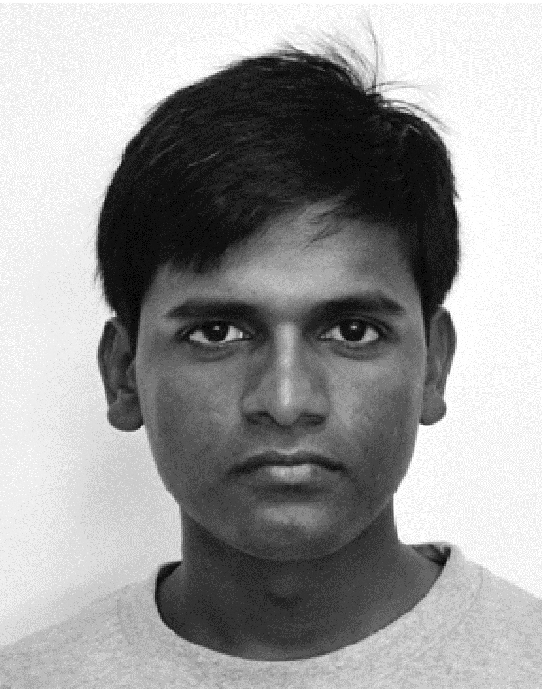

EC 2.17
Bengaluru 560 012
Email: parimal@iisc.ac.in
Tele: +91 80 2293 2279
Fax: +91 80 2360 0563
Parimal Parag is currently an associate professor in department of electrical communication engineering at Indian Institute of Science at Bangalore. He is also a co-convenor of the [centre for networked intelligence], a faculty participant at Robert Bosch centre for cyber-physical systems, and a member of the applied probability research group. He was working as senior systems engineer in R&D at ASSIA Inc. from October 2011 to November 2014. He received his B. Tech. and M. Tech. degrees from Indian Institute of Technology Madras in fall 2004; and the PhD degree from Texas A&M University in fall 2011. He was at Stanford University and Los Alamos National Laboratory, in autumn of 2010 and summer of 2007, respectively.
He conducts research in network theory, applied probability, optimization methods, and in their applications to distributed systems. His previous work includes performance evaluation, monitoring, and control of large broadband communication systems and networks. His other research interests lie in the areas of game theory, statistical signal processing, queueing theory, information theory, estimation & detection theory, combinatorics, and probability theory.
R. Jinan, A. Badita, P. K. Sarvepalli, and P. Parag. Latency optimal storage and scheduling of replicated fragments for memory constrained servers. IEEE Transactions on Information Theory. ieeexplore. paper.
A. K. S. Krishnan, C. K. Singh, S. T. Maguluri, and P. Parag. Optimal Pricing in Multi Server Systems. Performance Evaluation. elsevier. paper.
G. Gautam, S. Rathee, P. Patil, and P. Parag. A scalable container-based virtualized data center emulation framework. International Conference on Communication Systems and Networks (COMSNETS). pp. 452–454, Jan 2022. ieeexplore. paper. slides. video. short video.
S. Ramanathan, G. Gautam, V. Srinivasan, and P. Parag. Latency-redundancy tradeoff in distributed read-write systems. International Conference on Communication Systems and Networks (COMSNETS). pp. 172–180, Jan 2022. ieeexplore. paper. slides. video.